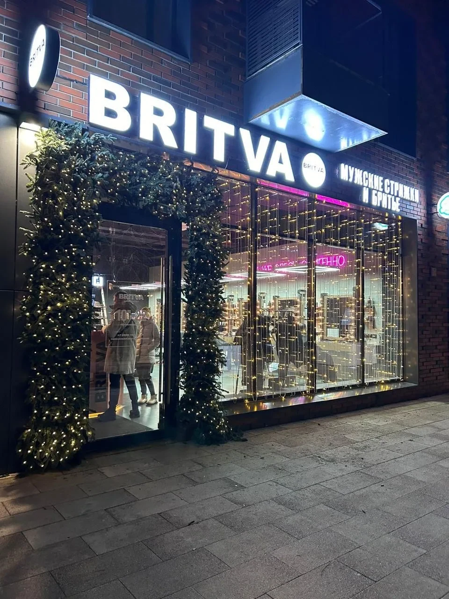

ПОРТФОЛИО / НОВЫЙ ГОД
Новогоднее оформление входа BRITVA
Вечерний вход BRITVA оформили хвоей и световым занавесом. На фотографии видно, как декор обрамляет дверь и витрину.

- Объект
- BRITVA
- Зона
- Входная группа и фасад
- Состав
- Хвоя и световой занавес
Как устроен акцент
Хвойное обрамление выделяет дверь. Вертикальные нити света продолжают композицию на стекле витрины.